- Role
- Product Designer
- Scope
- Design system, foundations to components
- Timeline
- 2 to 3 months
- Platform
- Responsive web, built on Figma variables
The problem
EC Affiliates is a name changed here for confidentiality. Its product had two problems happening at the same time: the interface was outdated, and there was no system underneath holding everything together.
Without a design system, every screen was assembled by hand. The same button, table row, and input existed in slightly different versions across different parts of the product, and none of those differences were intentional decisions. That made the product easy to design but expensive to build. Engineers had to interpret each screen individually, and every small inconsistency became a question, which often led to rework.
So the brief was not simply about giving the product a visual refresh. The goal was to give the entire product a consistent design language, and then build the new interface within that system rather than designing each screen independently.
Deliberately neutral
The request was for a system without a strong opinion of its own. The company wanted the option to white label the product in the future, so nothing could depend on a single brand’s personality. It needed to be clean, direct, and quiet enough that another brand could be introduced without the system working against it.
That constraint turned out to be useful. A system that cannot rely on a brand has to earn its clarity through structure instead: consistent spacing, contrast that remains effective across different color palettes, and components that behave consistently regardless of the colors they use.
Foundations
Seven layers, each its own page in the file, each one a decision made once so it would not have to be made again on every screen.
- 01
Color
Eleven families, each a full tonal ramp from the lightest tint to the deepest shade. A re-skin changes the ramp; nothing that uses it has to change at all.
- 02
Typography
One scale, from Display 2xl down to the smallest supporting text, each step available in Regular, Medium, Semibold and Bold, set in Outfit.
- 03
Icons
Heroicons as the working set, alongside brand and country icon sheets for the surfaces that needed them.
- 04
Spacing
A single scale carrying both px and rem, so design and code could not quietly disagree about what one step meant.
- 05
Shadows
Six elevation steps, from a card at rest up to a modal, so depth became a token rather than a judgement call.
- 06
Grid layouts
Column systems for desktop, tablet and mobile, defined once so responsive behaviour was inherited instead of improvised.
- 07
Border radius
One radius scale, applied everywhere, which is most of what stops an interface from looking assembled by several people.
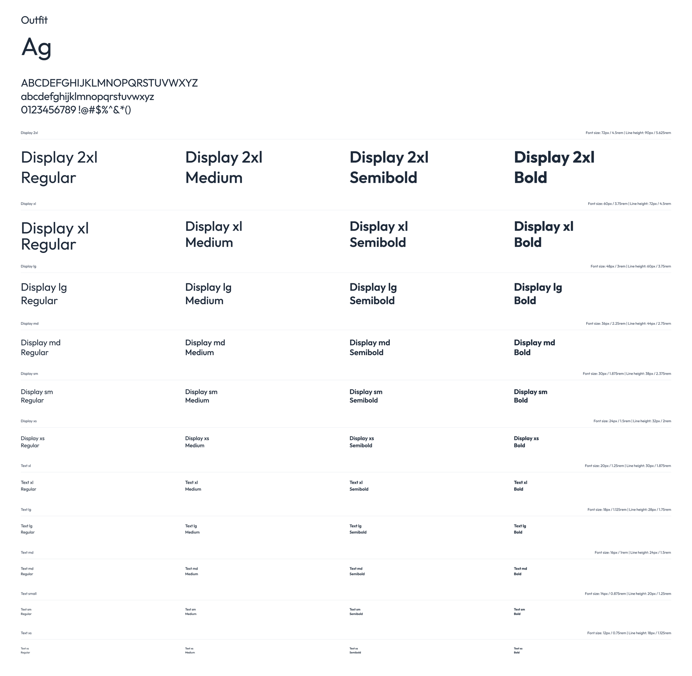
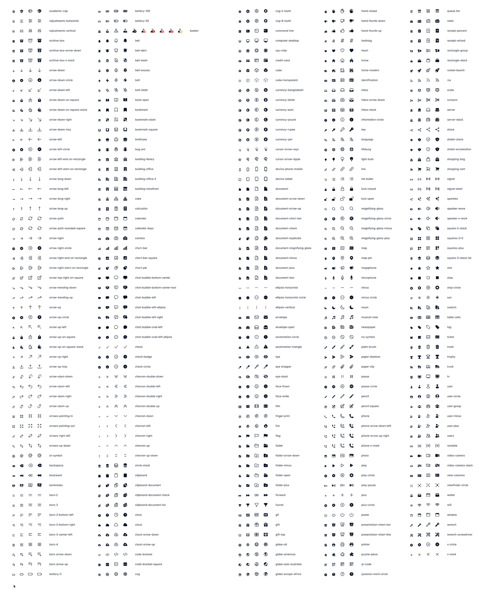
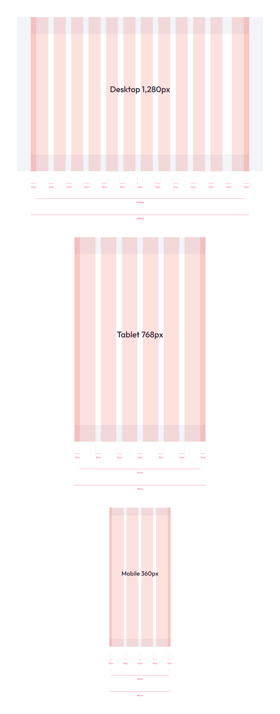
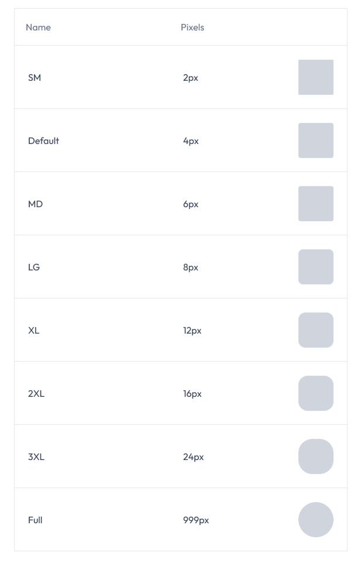
Typography
Eleven steps, from Display 2xl at 72px down to Text xs at 12px, each carrying its line height in both px and rem, and each drawn in four weights (forty-four styles in all). Set in Outfit.
Icons
The Heroicons set in full, each icon in all four variants and labelled with the exact name the build would call it by (academic-cap, battery-100, chevron-double-left).
Grid layouts
Three breakpoints, each with its own columns: 1,280px desktop over a 1,216px content width, 768px tablet over 704px, and 360px mobile over 328px. Gutters of 32px above, 16px on mobile. Settled once, so responsive behaviour was inherited rather than argued out per screen.
Border radius
Eight steps, SM at 2px through to Full at 999px. Naming the pill Full rather than a number is what keeps it a pill when the component around it changes size.
One set of variables, two themes
No color in the system is a hex sitting on a shape. Every one is a variable, and light and dark are two modes of the same set.
That means a screen gets designed once. The variables decide which theme it renders in, so dark mode is not a second file to keep in step with the first, which is how dark modes usually rot, quietly drifting a few components behind the light version until someone notices.
That is what the variables panel holds: each named for the job it does rather than the color it happens to be. Title Color, Border Secondary, Background Modal. Every one resolves to a different step of the ramp in each mode.
It pays off twice. Once for the themes, and again for every color decision afterwards: because the variables are grouped by what uses them (alerts, status, inputs, tabs, buttons, the sidebar) a change to one family lands everywhere that family is used, across the whole system, from a single edit.
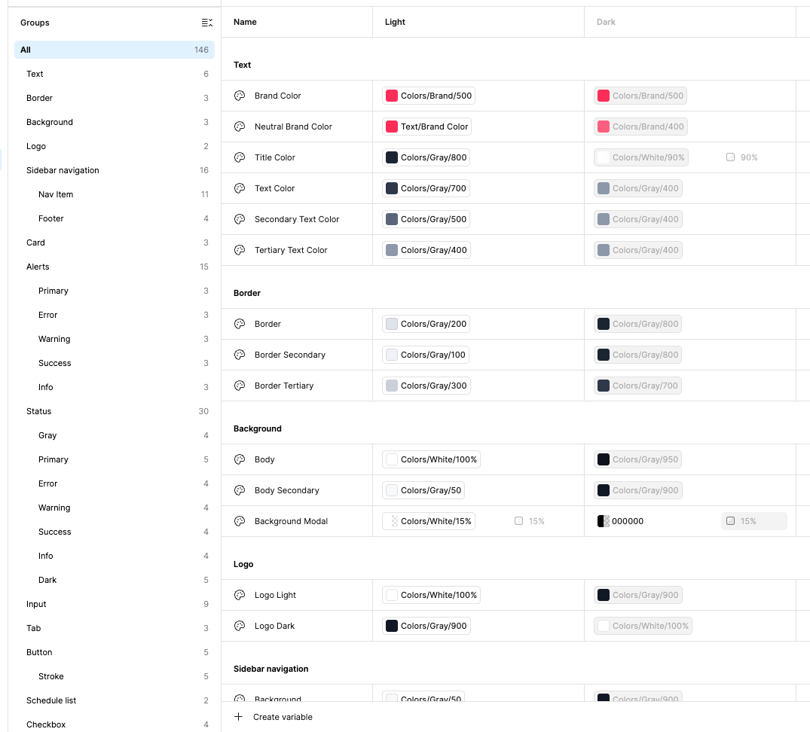
Below is the same requests screen in both modes. It was drawn once. Nothing was repositioned, nothing was redrawn, and no component has a light twin and a dark twin, The variables resolve to one palette or the other and every element follows.
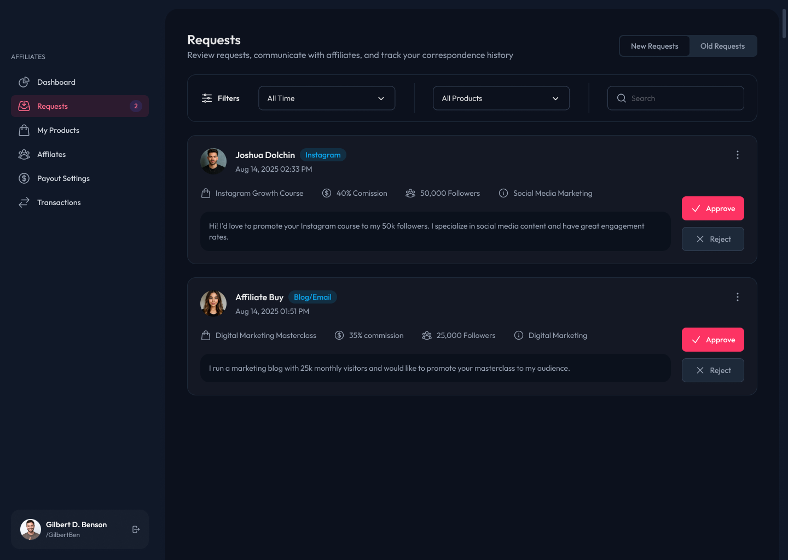
Light DarkBuilt to be used
Foundations only matter if the things built on them are complete enough to reach for. The components covered as many of the product's future cases as could be anticipated, not only the screens that existed on the day.
Everything was fully responsive, and the interactive pieces (including drag and drop) were specified as part of the component instead of being left as a note for engineering to interpret.
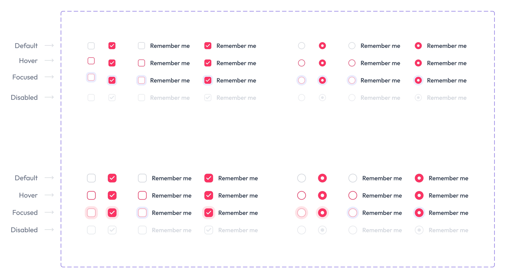
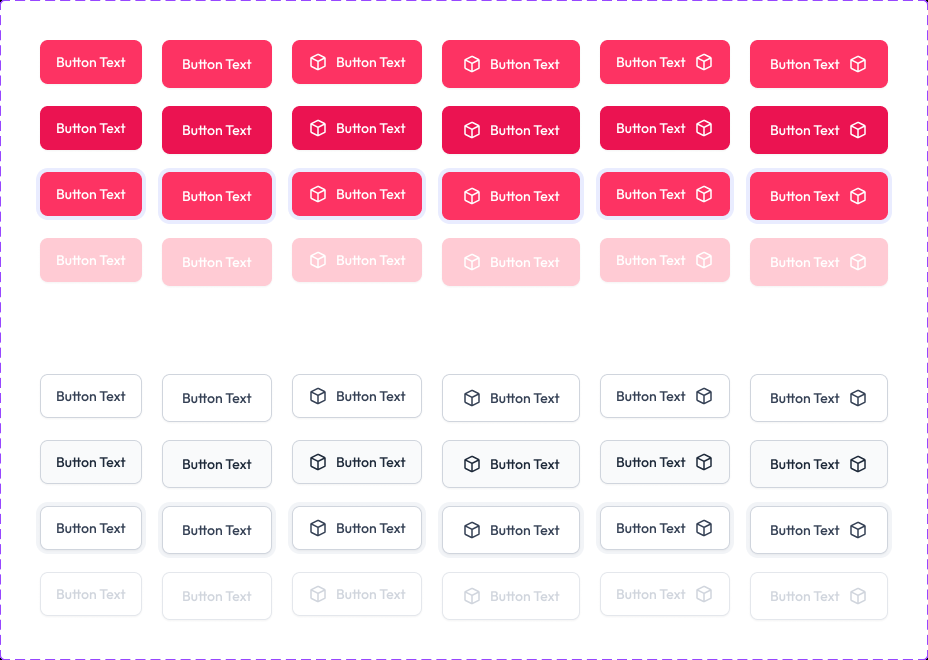
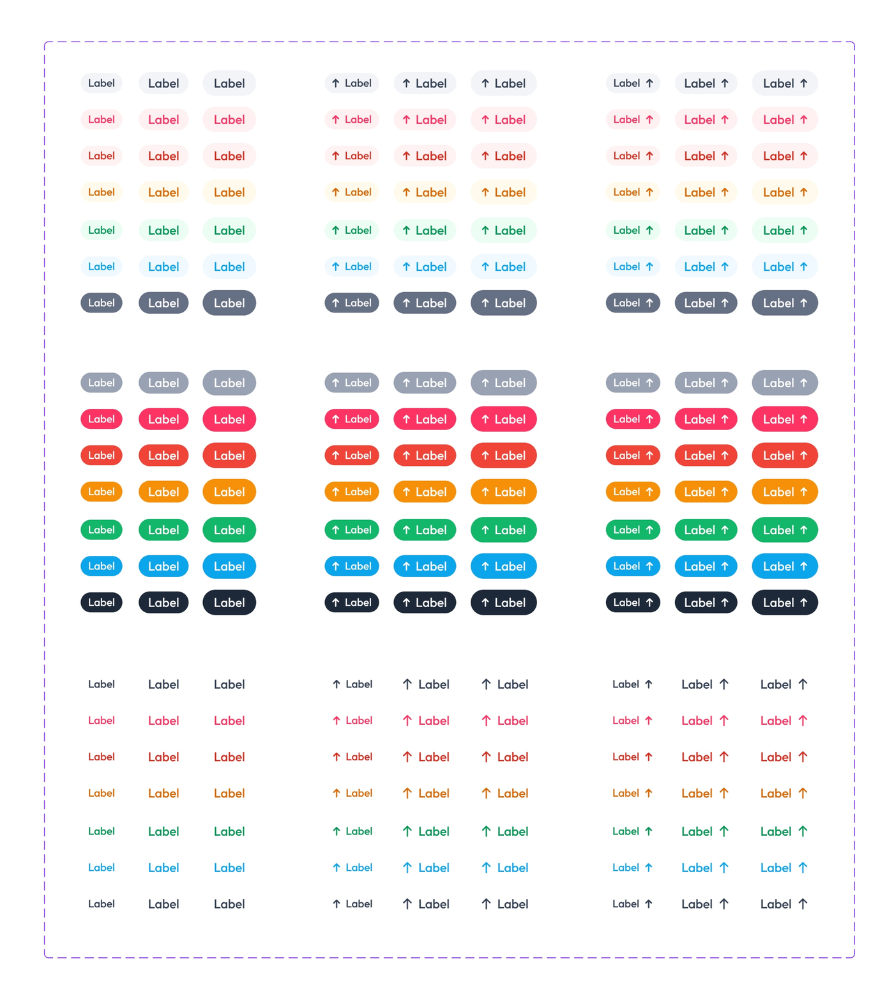
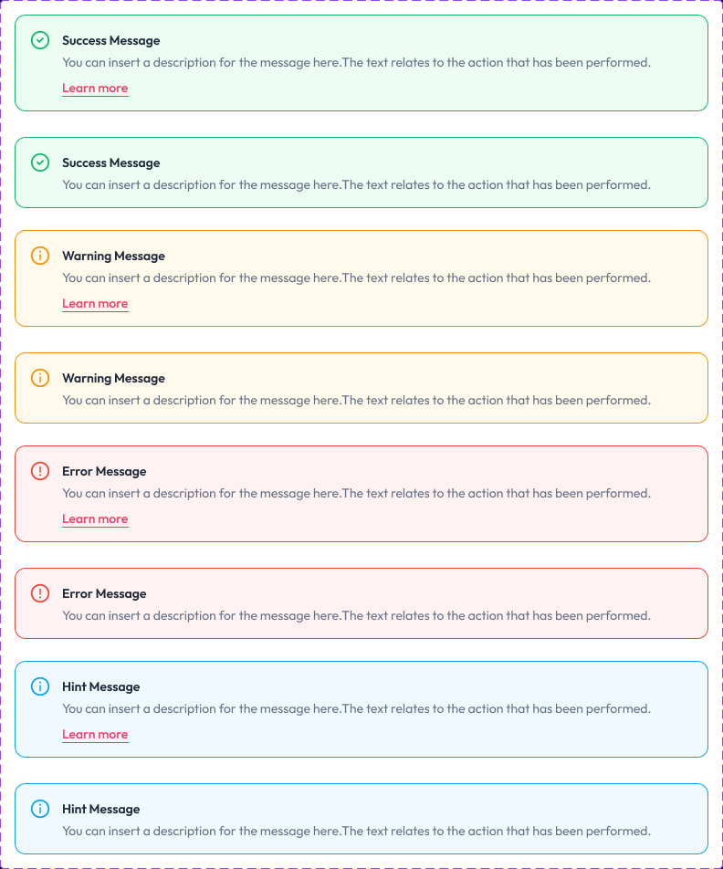
States
Checkboxes and radios drawn in default, hover, focused and disabled, at both sizes. Focus is part of the component rather than a note for engineering to add later.
Buttons
Filled and outlined, at three sizes, with the icon leading, trailing or absent, every one of them drawn in default, hover, focused and disabled.
Badges
One component in every family the palette carries, at three sizes, with the icon leading, trailing or absent. The ramp does the work, so the badge itself never changes.
Alerts
Success, warning, error and hint, each with and without a follow-up link. The state is carried by an icon and a word as well as by color, so the message still reads for anyone who cannot separate green from red.
The system in use
The point of all of it: screens assembled out of the vocabulary rather than drawn beside it.
Nothing in either screen is bespoke. The stat cards, the segmented toggles, the filter selects, the platform tags, the approve and reject buttons: each one is a component from the library, and a screen is an arrangement of them rather than a fresh drawing. The green change indicators are the badge component in its success family, which is why they agree with every other badge in the product without anyone having to remember what green was supposed to mean.
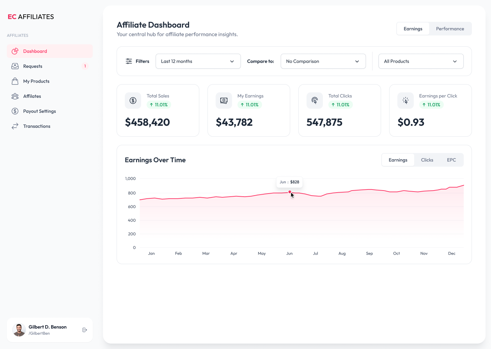
Accessibility, built in
The interface was checked against WCAG as it was designed, rather than styled first and audited afterwards.
The color structure is what makes that maintainable. Because every family runs as a full tonal ramp rather than a handful of hand-picked values, contrast stops being an argument had again on every screen and becomes a question of which steps sit together, the kind of decision a system can carry on behalf of everything built on it.
It matters more here than on most products. This is an interface people read numbers off, and on a dashboard legibility is not a finishing touch; it is the difference between the product working and not working.
Made to be maintained
A system is only as good as its second year, so the file was organised to be added to rather than admired.
Each foundation is its own page (color, type, icons, spacing, shadows, grids, radius), so there is exactly one place to change any given decision and no second copy to fall out of step with it. The tokens are named as scales rather than descriptions: shadow-md through shadow-3xl, spacing steps carrying both px and rem, color steps numbered along their ramp. Names like that survive a rebrand, because none of them describes the value it currently holds.
The variables carry the same load. With color held as variables instead of hexes, changing a theme (or the whole brand) is an edit in one place rather than a search across every component that used it.
What the system never got was a long life. It ran for months before the company pivoted, so it was never stress-tested by years of contributions from several teams. That would have needed the rest of the apparatus around it: a written route for proposing a component, versioning, and a deprecation path for the things it replaced. It is the first thing I would set up earlier next time.
The result
The system shipped, and then outlived the product it was built for.
The design was approved and implemented, and ran live for several months. Then the company pivoted and replaced the product entirely. The new product has a design system of its own, and several ideas from this one were carried straight into it. So the work did two jobs: it organised the build the first time, and it shaped the system that replaced it.
The engineers said the library was the part that helped most: with the components already there, building a new screen became assembly rather than reinvention.
The client described the interface as clean enough that nothing competed with the data itself, and called the change night and day.
Have a company worth skyrocketing?
I'm open to full-time roles and looking to join a team where I can bring a decade of product design and make a meaningful impact. If you're hiring, I'd love to hear about what you're building.